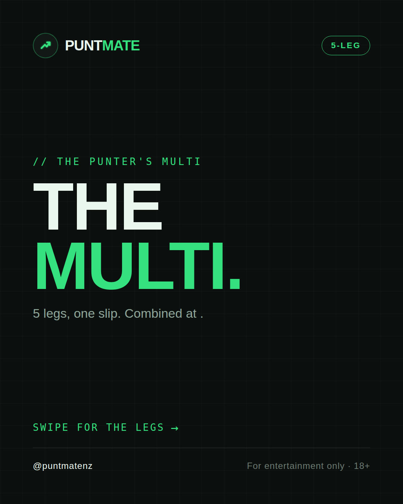
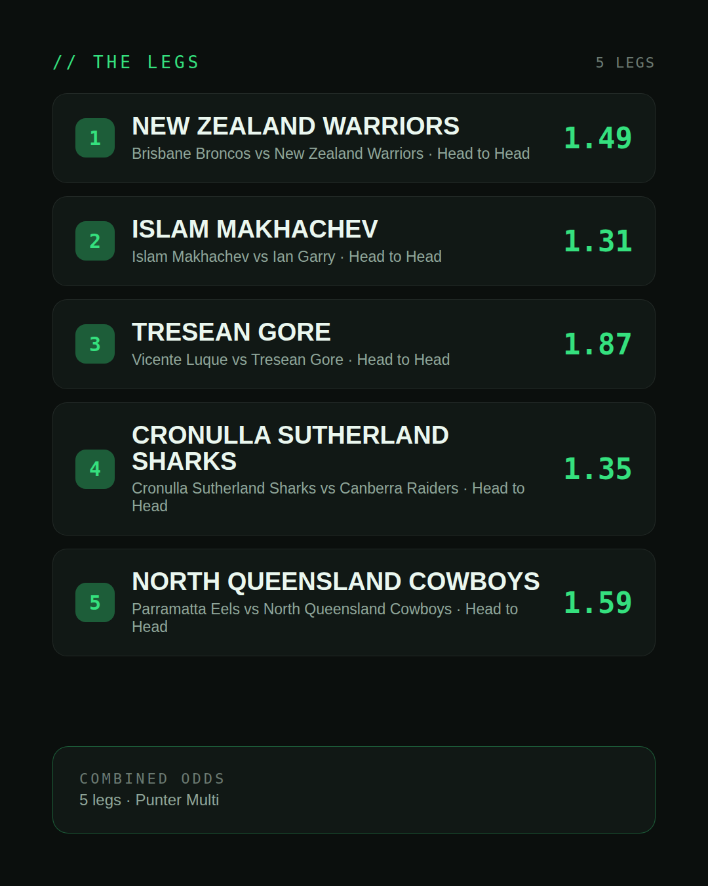
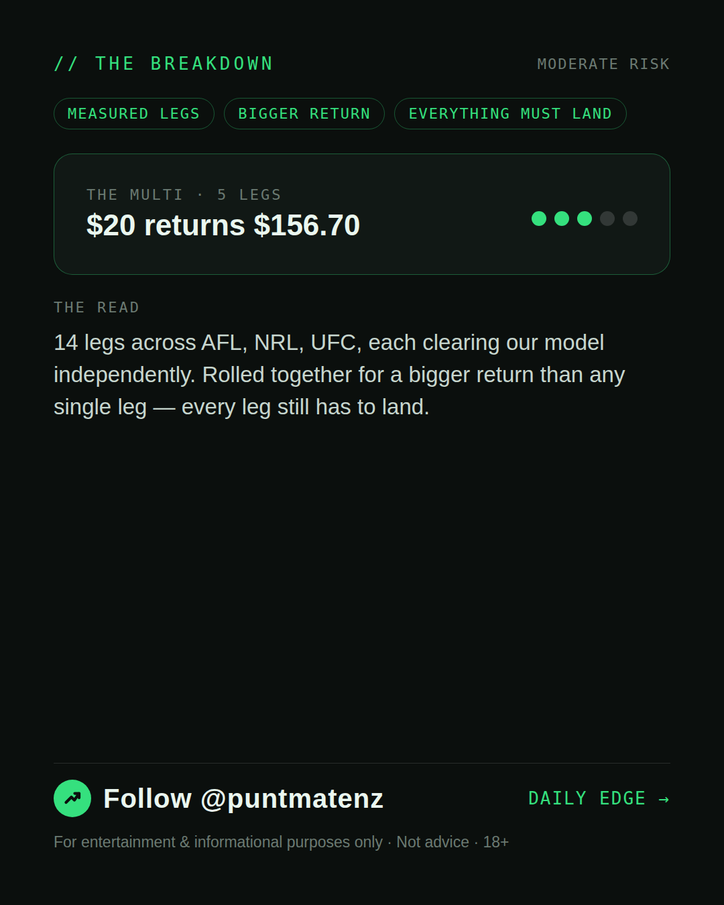
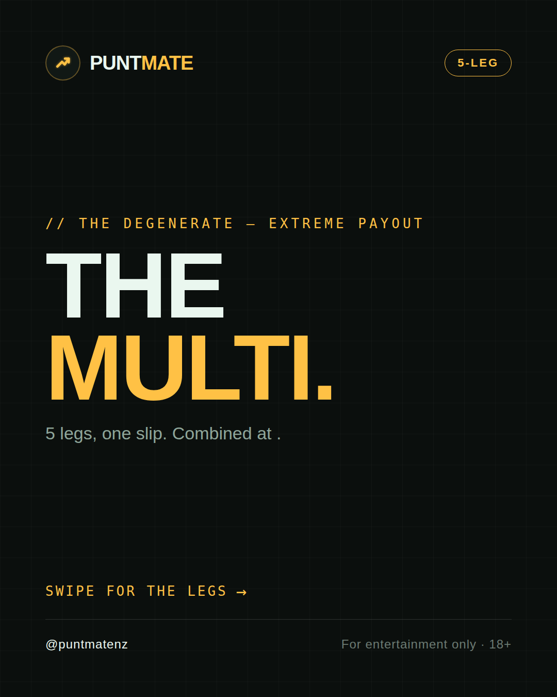
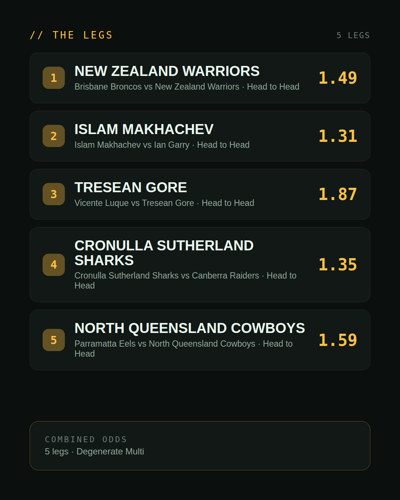
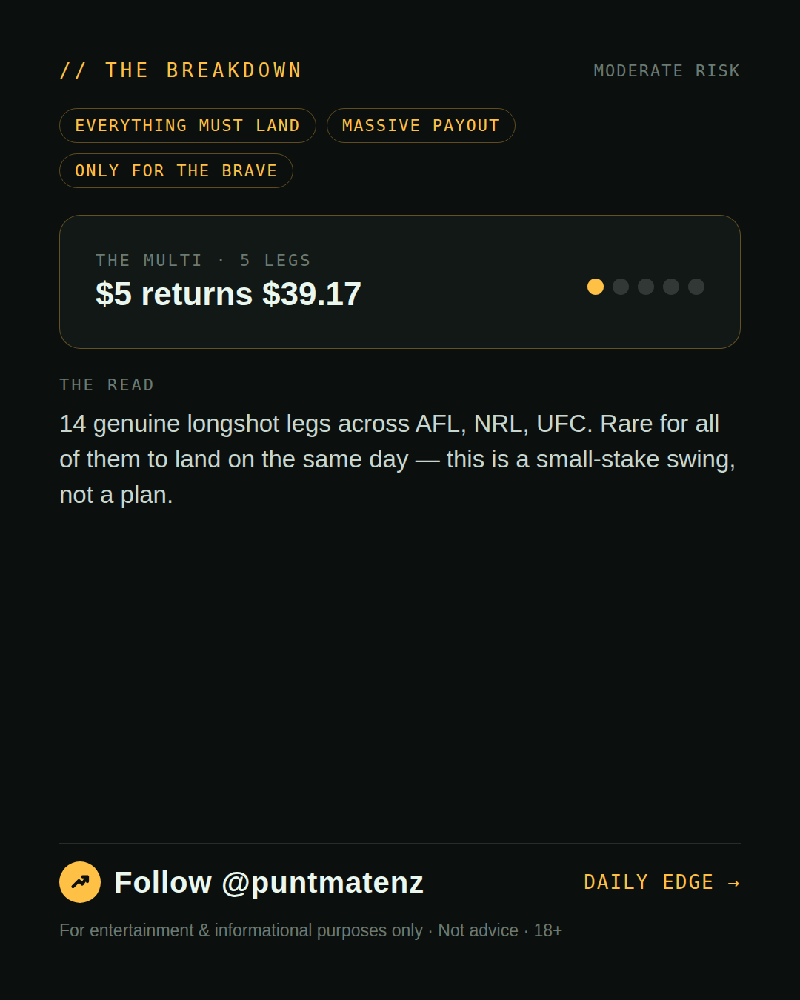

*🎯 PUNTMATE NZ — THE PUNTER'S MULTI* _A measured one: today produced multiple selections that each stand on their own as Investor/Punter-tier picks. Rolled together they pay well beyond any single leg — every leg still has to land, so this is a bigger swing than the day's single pick, not a certainty._ *Leg 1:* Brisbane Broncos vs New Zealand Warriors — NEW ZEALAND WARRIORS @ 1.49 (Head to Head) *Leg 2:* Islam Makhachev vs Ian Garry — ISLAM MAKHACHEV @ 1.31 (Head to Head) *Leg 3:* Vicente Luque vs Tresean Gore — TRESEAN GORE @ 1.87 (Head to Head) *Leg 4:* Cronulla Sutherland Sharks vs Canberra Raiders — CRONULLA SUTHERLAND SHARKS @ 1.35 (Head to Head) *Leg 5:* Parramatta Eels vs North Queensland Cowboys — NORTH QUEENSLAND COWBOYS @ 1.59 (Head to Head) *Leg 6:* Canterbury Bulldogs vs South Sydney Rabbitohs — CANTERBURY BULLDOGS @ 1.66 (Head to Head) *Leg 7:* Donte Johnson vs Eric McConico — DONTE JOHNSON @ 1.42 (Head to Head) *Leg 8:* Manly Warringah Sea Eagles vs Dolphins — DOLPHINS @ 1.38 (Head to Head) *Leg 9:* Newcastle Knights vs Gold Coast Titans — NEWCASTLE KNIGHTS @ 1.27 (Head to Head) *Leg 10:* Wests Tigers vs St George Illawarra Dragons — ST GEORGE ILLAWARRA DRAGONS @ 1.91 (Head to Head) *Leg 11:* Mackenzie Dern vs Gillian Robertson — MACKENZIE DERN @ 1.52 (Head to Head) *Leg 12:* Mansur Abdul-Malik vs Dustin Stoltzfus — MANSUR ABDUL-MALIK @ 1.17 (Head to Head) *Leg 13:* Chidi Njokuani vs Joel Alvarez — JOEL ALVAREZ @ 1.34 (Head to Head) *Leg 14:* Fremantle Dockers vs Adelaide Crows — FREMANTLE DOCKERS @ 1.35 (Head to Head) *Combined: 198.89* *BET TYPE: PUNTER* One leg fails, the lot fails. ────────────────── ⚠️ For entertainment & informational purposes only. Not advice. 18+. ---
(see per-tier text above — no single Instagram caption for a weekend-multi-only post)
| has_pick | False |
| is_weekend_multi | True |
| pick_id | 2026-08-13_weekend_multi |
| post_date | 2026-08-13 |
| run_id | 31738148481 |
| generated_at | 2026-08-13T19:57:23.680543+00:00 |
| workflow_state | GENERATED |
| has_punter_multi | True |
| punter_multi_carousel_paths | ['data/review/2026-08-13_weekend_multi/punter_multi_cover.png', 'data/review/2026-08-13_weekend_multi/punter_multi_legs.png', 'data/review/2026-08-13_weekend_multi/punter_multi_breakdown.png'] |
| punter_multi_carousel_urls | ['https://raw.githubusercontent.com/kingofthecastle24/puntmate/main/data/cards/2026-08-13_Weekend_Multi_night_punter_multi_1_cover.png', 'https://raw.githubusercontent.com/kingofthecastle24/puntmate/main/data/cards/2026-08-13_Weekend_Multi_night_punter_multi_2_legs.png', 'https://raw.githubusercontent.com/kingofthecastle24/puntmate/main/data/cards/2026-08-13_Weekend_Multi_night_punter_multi_3_breakdown.png'] |
| has_gambler_multi | False |
| has_degenerate_multi | True |
| degenerate_multi_carousel_paths | ['data/review/2026-08-13_weekend_multi/degenerate_multi_cover.png', 'data/review/2026-08-13_weekend_multi/degenerate_multi_legs.png', 'data/review/2026-08-13_weekend_multi/degenerate_multi_breakdown.png'] |
| degenerate_multi_carousel_urls | ['https://raw.githubusercontent.com/kingofthecastle24/puntmate/main/data/cards/2026-08-13_Weekend_Multi_night_degenerate_multi_1_cover.png', 'https://raw.githubusercontent.com/kingofthecastle24/puntmate/main/data/cards/2026-08-13_Weekend_Multi_night_degenerate_multi_2_legs.png', 'https://raw.githubusercontent.com/kingofthecastle24/puntmate/main/data/cards/2026-08-13_Weekend_Multi_night_degenerate_multi_3_breakdown.png'] |
| intended_platforms | ['instagram_feed', 'telegram'] |